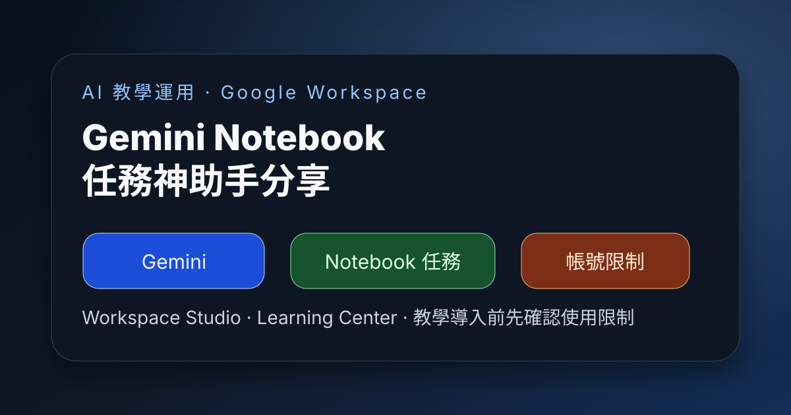

Facebook｜AI教學運用交流：Gemini Notebook 任務神助手與 Google Workspace Studio 學習資源

一句話摘要
這則貼文分享「Gemini Notebook 任務神助手」與 Google Workspace Studio 相關學習資源，重點提醒是：在把 Gemini / Workspace AI 功能帶進教學或工作流程前，要先確認個人帳號與 Workspace 帳號的使用限制。
來源脈絡
- 來源：Facebook 社團「AI教學運用交流」。
- 發文者：蘇秦（Admin）。
- 貼文主題：Gemini Notebook 任務神助手精彩分享、Google Workspace Studio。
- 貼文附上 Google Workspace Learning Center 英文與繁體中文入口。
- Facebook 可見標示：AI content；分享連結會導向社團貼文。
內容重點
貼文文字主要包含三個訊號：
- 主題是「Gemini Notebook 任務神助手」的應用分享。
- 關聯到 Google Workspace Studio。
- 特別提醒「請留意個人帳號的使用限制」，並提供 Google Workspace Learning Center 作為後續查詢入口。
這表示該資源不只是功能展示，也涉及帳號資格、Workspace 管理政策、功能開放狀態與教學現場可用性的問題。
為什麼值得保存
對 AI 教學與課程設計來說，Google Gemini / Notebook / Workspace Studio 這類工具很適合做任務助理、資料整理、筆記生成、表單與文件流程自動化示範。但實務上最常遇到的問題往往不是 prompt，而是：
- 個人 Google 帳號與 Workspace 帳號可用功能不同。
- 學校、企業或組織的管理員可能關閉部分 AI 功能。
- 語言、地區、方案與年齡／教育帳號政策會影響可用性。
- 課堂示範時，老師帳號可用，不代表學員帳號也可用。
- 需要事先準備替代流程，避免現場因權限或功能未開通而中斷。
因此這則適合放進 AI 學習雷達，作為「Google Workspace AI 教學導入前檢查」的提醒。
教學導入檢查清單
若要把 Gemini Notebook / Google Workspace Studio 放進課程或工作坊，建議先確認：
- 使用者帳號類型：個人帳號、學校 Workspace、企業 Workspace 是否一致。
- Gemini / Workspace AI 功能是否已在該帳號開通。
- 管理員是否允許 AI 功能、外部連結、資料存取與附加元件。
- 學員是否能打開 Google Workspace Learning Center 或官方說明頁。
- 是否需要準備替代工具，例如 NotebookLM、Gemini 網頁版、Google Docs / Sheets 手動流程或截圖示範。
- 是否需要事前公告「帳號限制」與「請用指定帳號登入」。
可延伸用途
這則貼文可以延伸成幾種教學活動：
- 任務助理示範：把課程資料、會議紀錄或閱讀材料整理成待辦清單。
- Notebook 工作流：用 Gemini 協助摘要、提問、整理學習筆記。
- Workspace 自動化：把 Gmail、Docs、Sheets、Drive 的日常流程轉成可複用任務。
- 帳號差異教學：讓學員理解 AI 工具導入不只是功能，也包含權限、方案與資料治理。
原始連結
Facebook 分享連結：
https://www.facebook.com/share/p/1GJ444GUCe/
Facebook canonical：
https://www.facebook.com/groups/176477159626940/posts/2076636262944344/
Google Workspace Learning Center（英文）：
https://support.google.com/a/users/?hl=en&sjid=1158682511564903441-NC#topic=11499463
Google Workspace Learning Center（繁中）：
https://support.google.com/a/users/?hl=zh-Hant#topic=11499463
Google Workspace：